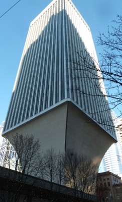
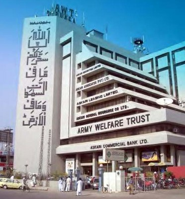
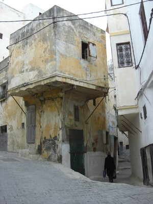
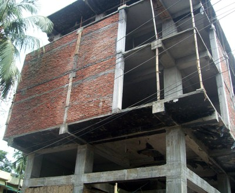

Change in vertical structure (includes large overhangs) [CHV]
Changes in vertical structure when the structural system and/or structural material changes up the height of the building. This also covers the irregularity referred to as "Offset Structure" in some building codes. The Offset Structure refers to a case when the lateral load-resisting system is not vertically continuous from foundation to roof, but has a horizontal offset somewhere up its height. These buildings may have two different lateral load-resisting systems at some floor levels, but not across all levels (vertically), or across the entire plan (horizontally).

Change in vertical structure (FEMA 454, 2006)

Offset structure - discontinuous shear walls (FEMA 454, 2006)

Change in vertical structure, Seattle, USA (S. Brzev)

Change in vertical structure, a temple in China (D. Willms)

This building in Rawalpindi, Pakistan has change in vertical structure and it suffered damage in the 2005 Kashmir earthquake (C. Scawthorn)

A Kasbah in Tanger, Morocco with a large overhang (C. Scawthorn)

Change in vertical structure, Seattle Central Library, USA (S. Brzev)

A building with large overhangs, University of California Berkeley, USA (S. Brzev)

This building in India has large overhangs (People in Centre)